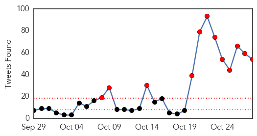
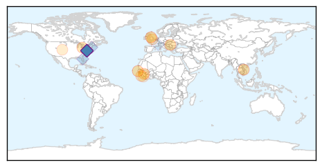
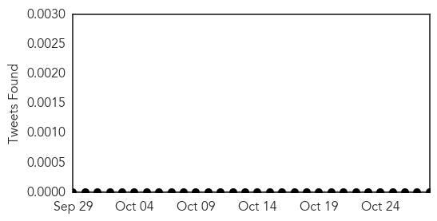

Ebola
30-Day Web Trend
4 alerts, 0 warnings

30-Day Twitter Trend
12 alerts, 0 warnings

Article Locations
Article Confidences

Top Articles:
- 0.998
- The Politics behind the Ebola Crisis
- 0.997
- Ebola Epidemic Goes Out of Control – Global Alert
- 0.961
- Beyond Ebola: Boston Physicians Lead Global Effort To Prevent The Next Pandemic
- 0.938
- This Ebola-Type Fever Is Named After A Town In Germany
- 0.890
- ADRA Country Director Urges Good Hygiene Practice
- 0.843
- Cleveland Clinic: Speedier development of vaccines top medical innovation for 2016
- 0.731
- United Nations Press Release
- 0.731
- Health Check, The first chemical proof of our brain adapting to chronic pain
- 0.574
- Extinguishing Ebola: Greeley Central graduate plays a small role in helping to snuff the outbreak of
- 0.564
- Is the momentum right for universal health coverage?
- 0.513
- Dont drop your guards....Rtd. Brig. Bio appeals in Pujehun
Top Tweets:
- 0.978
- Ebola virus disease (EVD) - https://t.co/ncVmkQ2PHd ebola
- 0.946
- Boston Doctors Lead International Efforts to Prevent Next Ebola Outbreak - https://t.co/hiJH3e3bYE ebola
- 0.942
- Ebola fever - https://t.co/yHiIXeztds ebola
- 0.913
- Documenting the Response to the Ebola Epidemic in Liberia through the Perspective of the Local ... - https://t.co/wZe0MoiGtq ebola
- 0.909
- Public Information Campaigns On Ebola Continue In West Africa - https://t.co/QtXSxEBF3t ebola
- 0.889
- Guinea reported 3 Ebola cases for the week to Oct 25. All are household contacts of a known case. The tail on this outbreak is looooong
- 0.882
- Photo Feature: After Ebola Sierra Leone's burial workers fear a bleak future - https://t.co/31VbcbRLmm ebola
- 0.877
- RT: The Importance of Having `Flu Buddies’ In A Pandemic by https://t.co/yc0o73Di79 ebola flu
- 0.868
- ebola - https://t.co/UbB8B1h2R3 ebola
- 0.866
- Stryker spreads awareness about Ebola in Africa - https://t.co/UiBTJtC6Px ebola
- 0.862
- Reanimadores RIP Kids GHB Enoch Ramone & The Ebola Boys - https://t.co/aotuMbCkuT ebola
- 0.861
- Rigorous screening at US airports for Ebola virus - https://t.co/71EJaidmgS ebola
- 0.854
- SUSPECT EBOLA CASE IN GALICIA TESTS NEGATIVE - https://t.co/RQNPlTBDhz ebola
- 0.847
- Nurse Quarantined During Ebola Panic Sues Chris Christie - https://t.co/Ku3UuAxkMg ebola
- 0.845
- Digitizing Payments to Ebola Response Workers - https://t.co/b5g0TWEF3J ebola
- 0.843
- Ebola Crisis - https://t.co/6bmFuquukg ebola
- 0.831
- Ebola vaccine trials get underway in Uganda - https://t.co/mCDVhGjI2G ebola
- 0.827
- Guinea records three new cases of Ebola brings total to nine - https://t.co/PBcYjjpYMf ebola
- 0.826
- Ebola vaccine trials get underway in Uganda - New Vision https://t.co/XzXdn1jmlQ ebola EVD
- 0.824
- YWCA Identifies with Ebola Widow widowers - https://t.co/DDlN2ke4nA ebola
- 0.824
- YWCA Identifies With Ebola Widow Widowers - https://t.co/ExGHVMmxYM ebola
- 0.814
- Sierra Leone News:EU working with Govt. in post-ebola recovery - https://t.co/2BOzz3EJ8H ebola
- 0.808
- Nurse quarantined over Ebola has no plan to sue in Maine - https://t.co/qwLwGgsTzJ ebola
- 0.808
- Ebola sickens 3 family members in Guinea - https://t.co/k9rCbnvYIb ebola
- 0.806
- Mental health in emergency response: lessons from Ebola - https://t.co/bcLcxEPvyt ebola
- 0.797
- MSF analyses Ebola crisis with Belgian software - https://t.co/oBT3h8Tcyp ebola
- 0.795
- The Politics behind the Ebola Crisis - International Crisis Group https://t.co/55XeumskcI ebola EVD
- 0.771
- More than 300K passengers have now undergone exit screening at international airports in the 3 Ebola affected countries.
- 0.758
- South Reassures Bio of Zero Ebola - https://t.co/BA2Xmpvfh1 ebola
- 0.757
- Ebola: Expert tasks Nigerians on hygiene - https://t.co/G7KgPEbhhA ebola
- 0.755
- Ebola Survivors Still Have Myriad Problems - MedPage Today https://t.co/rP7x5GPGRU ebola EVD
- 0.752
- British People Are Being Offered Money To Be Injected With Ebola - https://t.co/tLf6mfq3rA ebola
- 0.751
- Defense: Supect in ATM worker slaying believed victim was spreading Ebola - WLWT Cincinnati https://t.co/bsrQNCtQAf ebola EVD
- 0.749
- The Politics behind the Ebola Crisis - https://t.co/1pgvSeLPNj ebola
- 0.749
- ICG: The politics behind the Ebola crisis - https://t.co/tpESdaGTmE ebola
- 0.712
- Ebola '76 by Amir Tag Elsir – Chapter One - https://t.co/voLQcPE8RD ebola
- 0.710
- Trade unions embrace Ebola workplace response - https://t.co/tmWjqs8fNe ebola
- 0.707
- Beyond Ebola and Polio - https://t.co/XBdBASp7ct ebola
- 0.695
- Ebola crisis in Africa leads to increase in teenage pregnancies - https://t.co/iPTTzhUC9I ebola
- 0.685
- Report Finds Gaps In Army Oversight Of Ebola Fight Contract - https://t.co/OJzwrfnkMg ebola
- 0.683
- Nurse Saying She Was Unlawfully Detained Over Ebola Scare Suing Christie - https://t.co/WhYoidNgEo ebola
- 0.679
- 'I want to spread startup ebola': Steve Baxter and 20 coding kids from Queensland share what they ... - https://t.co/J9k9Ude4W2 ebola
- 0.678
- Visa rules Ebola scare hit Cape conventions - BDlive https://t.co/z3agqQCdCd ebola EVD
- 0.634
- Rep. Berrian Honors Several Teachers for Ebola Fight - https://t.co/Fl22DteqDb ebola
- 0.616
- Visa rules Ebola scare hit Cape conventions - https://t.co/zmmAL6Whlj ebola
- 0.605
- Watch Live Life's Vine "I have Ebola comedy live funny Fun" - https://t.co/p5AZJxp0fd ebola
- 0.603
- S/Leone to be declared Ebola-free on November 7 – official - https://t.co/oNNSDuEIPZ ebola
- 0.595
- Unprecedented Ebola epidemic highlights global need for stronger systems for disease tracking response prevention https://t.co/UUhX7bSgi5
- 0.591
- Biocontainment lab director visits EPI to give lecture on Ebola - https://t.co/TU23kWm943 ebola
- 0.574
- Ebola survivors research enrollment hits 931 - https://t.co/g84ExLy9tS ebola
Showing top 50 tweets...
Mold/Fungal
30-Day Web Trend
0 alerts, 0 warnings
30-Day Twitter Trend
0 alerts, 0 warnings

Article Locations

Article Confidences

Top Articles:
-
No articles found for Oct 28, 2015
Top Tweets:
-
No tweets found for Oct 28, 2015